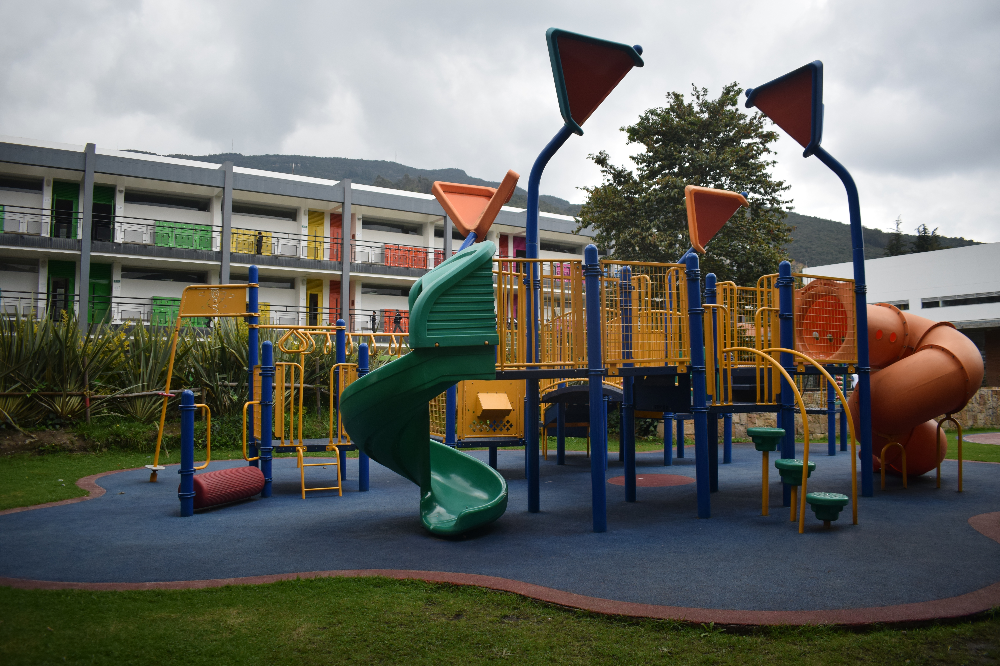
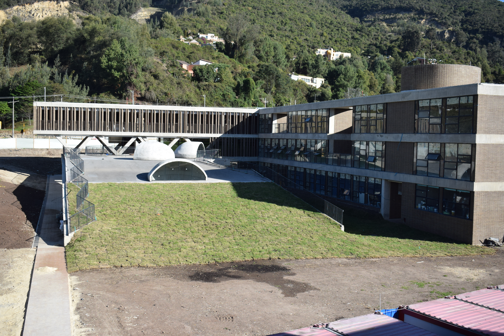
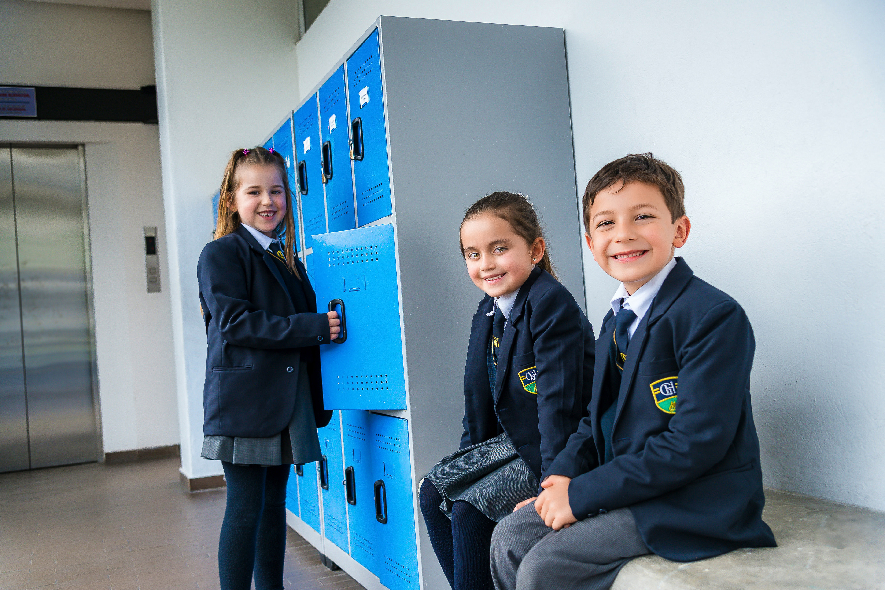
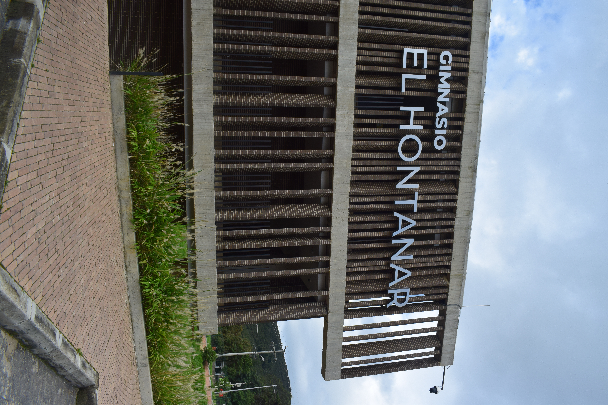
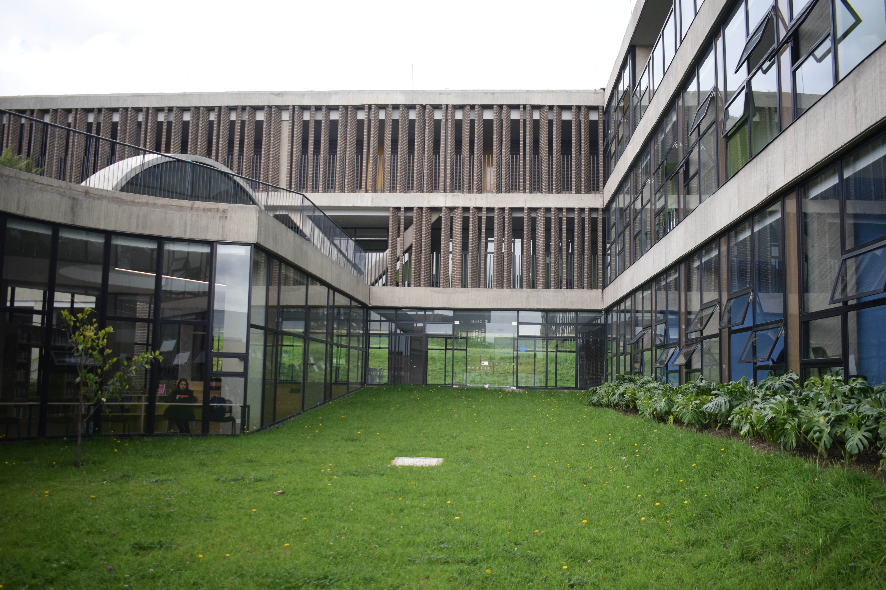
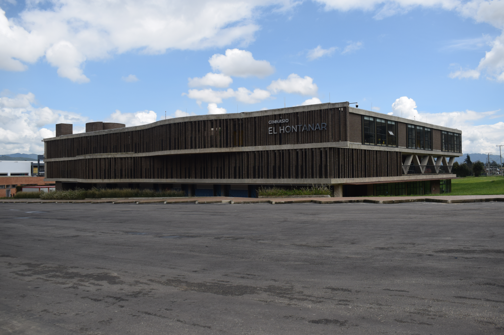

.png)
VIDA EN EL CAMPUS
Un Campus Verde para el Desarrollo Integral
El Gimnasio El Hontanar cuenta con un campus campestre diseñado para conectar el conocimiento con el bienestar. Ubicado estratégicamente sobre la carrera séptima, en una zona de fácil acceso entre Bogotá y Chía, nuestras instalaciones ofrecen el equilibrio perfecto entre infraestructura moderna y amplias zonas verdes en contacto con la naturaleza.
Creemos que el entorno físico influye en la calidad del aprendizaje. Por eso, nuestros espacios están pensados para estimular la curiosidad, fomentar el movimiento y ofrecer un respiro a la rutina escolar.
Infraestructura diseñada para la excelencia y el bienestar
Aulas activas y
laboratorios modernos
Espacios iluminados y dotados con la tecnología necesaria para el enfoque STEM+H, la investigación y el trabajo colaborativo. Cada aula es un entorno dinámico donde el aprendizaje ocurre de forma natural y significativa.
Escenarios para el
arte y la cultura
Salones especializados de música, artes plásticas y teatro que permiten a los estudiantes explorar su creatividad y sensibilidad. La expresión artística es parte fundamental de la formación integral en el Hontanar.
Campos deportivos y
zonas recreativas
Canchas de fútbol, espacios múltiples y zonas de juego donde el deporte y el movimiento fortalecen el carácter y la salud física. El movimiento y la recreación son parte esencial de cada jornada escolar.
- CAMPUS HONTANAR -
La Naturaleza como Aula Viva
Las amplias zonas verdes del Hontanar no son solo para el descanso; son aulas vivas. El contacto diario con la naturaleza reduce el estrés, mejora la concentración y fomenta la conciencia ambiental en los estudiantes desde preescolar hasta bachillerato.
CAMPUS HONTANAR
Galería de nuestros Espacios








El valor pedagógico de la naturaleza
Las amplias zonas verdes del Hontanar no son solo para el descanso; son aulas vivas. El contacto diario con la naturaleza reduce el estrés, mejora la concentración y fomenta la conciencia ambiental en los estudiantes desde preescolar hasta bachillerato. Aquí, los descansos son momentos de socialización segura, aire puro y recreación activa.
Estudiar en un entorno campestre permite a nuestros niños y jóvenes crecer en un ambiente tranquilo, propicio para el desarrollo de la autonomía y el pensamiento reflexivo.
Ven a visitarnos y descubre por qué nuestro campus es el mejor lugar para la educación de tus hijos.
Agenda tu visita ›


.png)
.jpg)